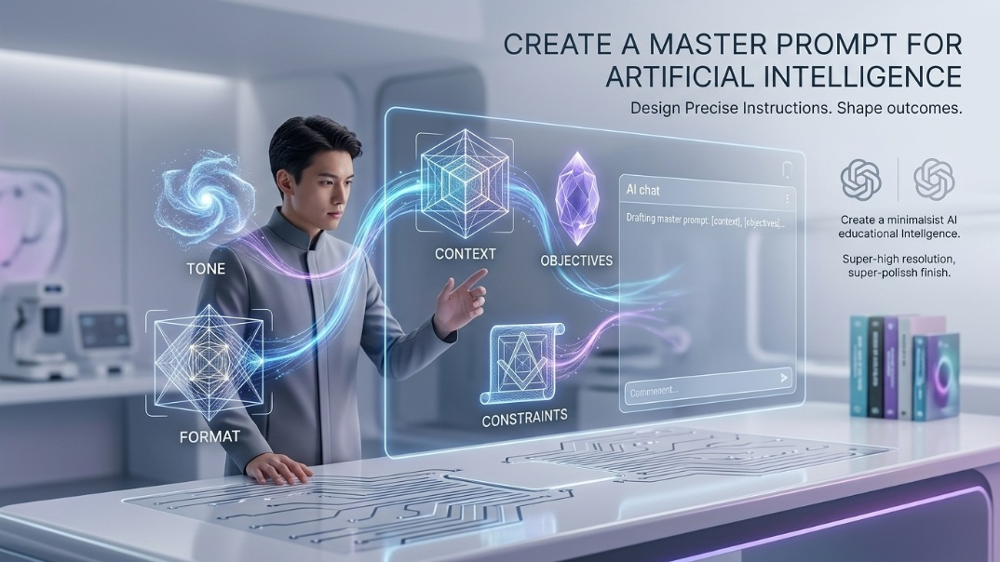

El Prompt
Ingeniería de instrucciones y la técnica R-P-C.
Un prompt es la instrucción que le das al modelo de lenguaje (LLM). La calidad de tu prompt determina directamente la calidad de la respuesta: entra basura, sale basura (garbage in, garbage out).
La Ingeniería de Prompts es la disciplina que estudia cómo formular instrucciones óptimas para obtener outputs precisos, repetibles y útiles. No es magia: es ingeniería de parámetros textuales.
El modelo no "entiende" como un humano: predice tokens basándose en probabilidades. Tu prompt actúa como el contexto inicial que condiciona todo el espacio de respuestas posibles.
Técnica R-P-C: La estructura más efectiva se construye con tres pilares: Rol (quién es la IA), Proceso (qué debe hacer y cómo) y Contexto (información relevante del entorno o la tarea).
| Elemento | Pregunta clave | Ejemplo |
|---|---|---|
| R — Rol | ¿Quién es la IA? | "Actúa como un experto en marketing digital…" |
| P — Proceso | ¿Qué debe hacer exactamente? | "…redacta 5 titulares para Instagram en tono informal…" |
| C — Contexto | ¿Con qué información cuenta? | "…para una tienda de ropa sostenible dirigida a jóvenes de 18-25 años." |
- Abre ChatGPT o Gemini en una nueva conversación. Empieza desde cero para no arrastrar contexto previo.
- Identifica el Rol: cuanto más específico, mejor. "Experto" es vago; "Ingeniero de datos con 10 años en Python y Pandas" es preciso.
- Define el Proceso: usa verbos de acción claros: resume, compara, genera, lista, explica, reescribe, traduce, extrae, clasifica. Especifica el formato de salida (tabla, lista, párrafos, JSON…).
- Añade el Contexto: pega el texto, dato o situación relevante. Si el contexto es largo, indica: "No respondas aún, primero lee esto:".
- Evalúa y refina: si la respuesta no cumple, aplica prompt chaining en el mismo chat ("Más conciso", "Solo en español", "Sin tecnicismos").
- Documenta tu prompt. Un buen prompt es un activo reutilizable: guárdalo en un documento.
1. En la técnica R-P-C, ¿qué elemento define el formato y la extensión de la respuesta?
2. La IA no te da la respuesta que esperabas. ¿Cuál es el enfoque más eficiente?
3. ¿Por qué se dice que un buen prompt es un "activo reutilizable"?